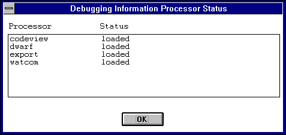
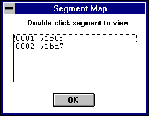
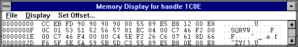
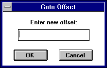
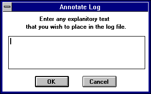
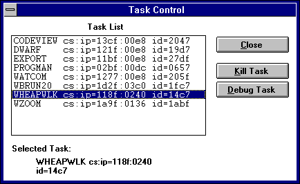

Index of Topics
- - W -
- Win16: Customize the Log File
Win16: Debugging a Task
Win16: Dr. Watcom for Windows 3.1
Win16: Dr. Watcom: Applying Registers
Win16: Dr. Watcom: Changing the Registers
Win16: Dr. Watcom: Clearing the Event List
Win16: Dr. Watcom: Exception Handling
Win16: Dr. Watcom: Marking the Event List
Win16: Dr. Watcom: Naming the Log File
Win16: Dr. Watcom: Other Options
Win16: Dr. Watcom: Saving Event List Information to a File
Win16: Dr. Watcom: Segment Mapping
Win16: Dr. Watcom: Setting the Fonts
Win16: Dr. Watcom: Specifying the Log File Data
Win16: Dr. Watcom: Working with Log Files
Win16: Erase the Log File
Win16: Examining the Task Status
Win16: Log the Current State
Win16: Performing a Stack Trace
Win16: Performing Task Control
Win16: Quitting Dr. Watcom
Win16: Resetting the Fault Handled Flag
Win16: Setting the Alert Feature
Win16: Showing the DIP status
Win16: Starting Dr. Watcom
Win16: Terminating a Task
Win16: The Dr. Watcom Menu Bar
Win16: Using Dr. Watcom
Win16: Using the Clear Alert Function
Win16: Using the Dr. Watcom Window
Win16: Dr. Watcom for Windows 3.1
The 16-bit version of Dr. Watcom is a post-mortem debugger for Windows 3.1. When an exception occurs in a
program, a post-mortem debugger allows you, after the fact, to examine the state of both the program and the system in order
to determine the cause of the exception. In addition to being a debugging tool, Dr. Watcom is a system utility
that enables you to examine task information.
Dr. Watcom can be a useful tool when performing in-house testing on your applications. By running Dr.
Watcom while testing applications, all faults are logged. This gives you important information to recreate the
errors so you can fix the problems.
- Note:
- Use the 16-bit version of Dr. Watcom to monitor 16-bit Windows (Win16) applications running under Windows 3.1 or Win32
based operating systems. Use the 32-bit version of Dr. Watcom to monitor Win32 applications running under Win32
based operating systems.
Win16: Using Dr. Watcom
This section discusses the following topics:
- Starting Dr. Watcom
- Quitting Dr. Watcom
- The Dr. Watcom Menu Bar
Dr. Watcom is designed to be used effectively while minimized. You only need to view the application window
when an error or warning occurs. When this happens the Dr. Watcom icon changes from stethoscope to an explosion
indicating that information is waiting for your attention in the main window.
Some of Dr. Watcom's main functionality can also be accessed using the system menu while the application is
minimized. This includes the log options, task control, and log current state functions.
Dr. Watcom is more useful with the Windows debug kernel. Under the debug kernel, Windows checks for many
common programming errors and generates debugging messages when it finds them. Dr. Watcom catches the debugging
messages and displays them on the event list. Viewing these messages helps you identify errors in your program that
you might not otherwise see.
Win16: Starting Dr. Watcom
To start Dr. Watcom, double click on the Dr. Watcom icon. This opens the Dr. Watcom window.
Win16: Quitting Dr. Watcom
To exit Dr. Watcom, select Exit from the File menu. This is the only way to quit the application. Unlike
other applications, double clicking on the system menu box or selecting close from the system menu only minimizes the application.
The menu bar consists of the following four menus:
- File
- Save to a file, work with the event list, and configure the session
Log
- Work with the log file
Task
- Work with tasks currently running under Windows
Help
- Access on-line help information
Win16: Using the Dr. Watcom Window
When you open Dr. Watcom, a window appears which contains the event list. The event list records the various
events occurring under Windows. Some examples of events are errors, debugging messages (under the debug kernel of Windows
only), the starting and ending of programs, and the loading and unloading of DLLs.

Figure 1. The Dr. Watcom window contains the event list which records and displays
events occurring under Windows.
When a debug message is issued, the Dr. Watcom icon alerts you that an entry has been made on the event list.
The Dr. Watcom icon changes from stethoscope to an explosion. To reset the icon you must acknowledge the
alert in one of two ways:
- (1)
- View the event list by double clicking on the icon, or
(2)
- Choose Clear Alert from the system menu.
Dr. Watcom intercepts all exceptions that occur in the system. An exception is an error that causes your program
to terminate. Dr. Watcom prevents your program from terminating by halting the program's execution. The
state of the program remains intact.
As with non-fatal errors, Dr. Watcom makes an entry on the event list when an exception occurs. However,
instead of alerting you to the entry by changing the icon, Dr. Watcom reveals an exception dialog. This dialog
gives you several options. Refer to the section entitled Win16: Dr. Watcom: Exception Handling
for more information.
The following sections describe functions that allow you to manipulate the event list:
- Saving the Event List
- Clearing the Event List
- Marking the Event List
- Setting the Fonts
The Save items in the File menu allow you to save the contents of the event list to a text file. Saving information
to a file enables you to print the output later or annotate the text file on-line.
Choose Save from the File menu to save the event list information into the current working directory. A message
box appears indicating the path to which Dr. Watcom saved the file.
Choose Save As from the File menu to specify the file to which you want to save the information currently in the window.
This opens a Save As dialog box where you select the desired file. Click on OK when completed. A message
box appears indicating the path to which Dr. Watcom saved the event list.
Win16: Dr. Watcom: Clearing the Event List
Choose Clear from the File menu to delete all information from the event list.
Win16: Dr. Watcom: Marking the Event List
Use the Mark function to annotate the information in the event list by entering text into it.
- To mark the event list :
-
(1)
- Choose Mark from the File menu.
This opens the Set Mark dialog box.

Figure 2. With the Set Mark dialog, you can annotate the event list by entering text and
choosing a mark style.
(2)
- Type the desired text in the Enter Mark Text field.
The text you enter will appear at the end of the event list
(3)
- Select the desired Mark Style option.
These options determine how the entered text is formatted when it is added to the event list When the boxed option is
selected, the text is displayed bordered by asterisks. With this option the text is easier to find. When the
plain option is selected, the text is displayed as it is entered.
(4)
- Click on OK when completed.
The Set Mark dialog closes and the text in the dialog appears at the end of the event list.

Figure 3. Text you enter in the Set Mark dialog appears in the event list in the selected
style.
Win16: Dr. Watcom: Setting the Fonts
The Set Font item in the File menu allows you to set the font, style, and size for the text in the Dr. Watcom window.
Choosing this item opens the Font dialog box. Select the desired font details and click on OK to close the dialog
and apply the fonts.
Win16: Setting the Alert Feature
Each time Dr. Watcom logs a debug message, its icon changes from a stethoscope to an explosion . This indicates
that there is important information waiting for you in the event list. Some debug messages report only minor programming
anomalies that may not be errors at all. The text for these messages is prefixed by wn, for warning. Because
these messages are not urgent, you may not want the icon to signal the message. The Alert on Warnings menu item allows
you to configure Dr. Watcom so that its icon does not change for these minor warning messages.
When the Alert on Warnings item in the File menu is not checked, the icon does not change for minor warning messages.
When this item is checked, the Dr. Watcom icon alerts you when a warning or serious error occurs.
Win16: Showing the DIP status
DIP's (Debugging Information Processors) are Dynamic Link Libraries that Dr. Watcom loads to read debugging information.
Each DIP allows Dr. Watcom to read a different type of debugging information. Choosing the Show DIP Status
item from the File menu displays the Debugging Information Processor Status dialog.

Figure 4. The Debugging Information Processor Status dialog shows the DIP's Dr. Watcom
has loaded.
This dialog contains a list of all the DIP's that Dr. Watcom attempted to load at startup and the results of
those loads. If Dr. Watcom was unable to load a particular DIP then the dialog will show the reason for the failure.
Dr. Watcom can only read a given type of debugging information if it has successfully loaded the appropriate
DIP.
Win16: Using the Clear Alert Function
If you are running Dr. Watcom minimized then each time an error or warning is logged, the icon changes from a stethoscope
to an explosion. Unless you reset the icon, you will not know when more events are added to the event list.
There are two ways to reset the Dr. Watcom icon:
- (1)
- Double click on the icon to view the event list, or
(2)
- Choose Clear Alert from the system menu.
To clear the alert message, click on the Dr. Watcom icon to reveal the system menu. Choose Clear Alert from
the menu to change the icon back to the stethoscope. Dr. Watcom still logs the event, but you do not have to
look at it immediately.
Win16: Dr. Watcom: Exception Handling
The Dr. Watcom exception dialog box appears on your screen when an exception occurs in any program in the system.
This indicates that a fatal error has occurred.

Figure 5. The exception dialog appears when a fatal error occurs in a program.
Instead of terminating the program, Dr. Watcom suspends it and leaves its state intact. Because the state
is undisturbed you can view the program's state information from the exception dialog, including memory and register values.
The exception dialog displays information about error and gives you several options. The information displayed
about the error includes:
- Task Name
- The name of the module in which the error occurred.
Task Path
- The full path of the file from which the offending module was loaded.
Fault Type
- The type of fault that occurred.
Fault CS:EIP
- The address of the instruction being executed when the fault occurred.
Source Info
- The source line on which the error occurred. This only appears if the program running contains debugging information.
There are four buttons on the exception dialog that you can use to proceed.
- Act
- When the act button is pressed, Dr. Watcom's action is determined by the option currently selected in the action to
take section of the dialog. The following describes the action taken for each option.
- Terminate Task
- When the Terminate Task radio button is selected choosing Act causes the faulting task to be terminated immediately.
Restart Instruction
- When the Restart Instruction radio button is selected choosing Act causes the faulting task to restart execution starting
with the instruction pointed to by its CS:EIP. This option is primarily used to restart a task after you have changed
its register values using the Task Status dialog.
Chain to Next Handler
- A handler is a piece of code, a program, or a routine that gets called when an exception occurs. The system can have
several exception handlers. When the Chain to Next Handler radio button is selected choosing Act passes the exception
on to the next handler in the sequence, or chain.
Act and Log
- Choosing the Act and Log button first creates a log file entry recording information about this fault then takes the same
action that would result from choosing the Act button.
Registers
- Select the Registers button to open the Task Status dialog. This dialog gives you additional information on the state
of the program when it crashed. From this window you can change the registers and flags, view segment mappings, and
do a stack trace. Refer to the section entitled Win16: Examining the Task Status
for further information.
Options
- Select the Options button to choose the information you want to write to the log file. This opens the Log File Options
dialog explained in the section entitled Win16: Customize the Log File.
Win16: Examining the Task Status
The Task Status dialog appears when you choose the Registers button on the exception dialog.

Figure 6. The Task Status dialog provides additional information on the program state when
the exception occurred.
This dialog displays information in four sections:
- Source Information
- Registers
- Flags
- Instructions Around Fault
The Source Information section indicates the source file where the error occurred and the line of that source file.
In order to get source information, your program must have debugging information. N/A appears in the Source Information
section if the program does not contain debugging information or the exception occurred on an assembly instruction that does
not correspond to a source file.
The Registers and Flags sections display information in the CPU at the time of the exception.
The Instructions Around Fault section displays the assembly instructions surrounding the instruction that was being
executed when the fault occurred. An asterisk marks the instruction to which the CS:EIP is currently pointing.
When the Show Symbols box is checked, Dr. Watcom tries to replace addresses in the assembly code with symbolic
names. Dr. Watcom can only replace addresses if the faulting module contained debugging information. If
this box is not checked, addresses are left as numeric values.
Win16: Dr. Watcom: Changing the Registers
In the Task Status dialog you can set up testing and debugging situations by changing the register and flag values.
To change a register value simply enter a new value in the edit field that contains the current register value. To
change the state of a flag register just check or uncheck the check box associated with that flag. A flag has a value
of 1 when its check box is checked.
The register and flag values will not take effect until you choose OK on the Task Status dialog.
Win16: Dr. Watcom: Applying Registers
Choosing Apply Registers updates the information in the Task Status dialog based on values of registers and flags to which
you have made changes.
Win16: Dr. Watcom: Segment Mapping
Choosing Segment Map from the Task Status dialog opens a Segment Map dialog box which indicates the selectors to which
your map segments were mapped. There is one entry for every segment in the program.

Figure 7. The Segment Map dialog lists the selectors to which the segments were mapped.
This dialog allows you to view the data contained in each of your program's segments. To view this memory, double
click on the desired segment. This opens a Memory Display window for the selected segment.

Figure 8. The Memory Display window displays the memory stored in the selected segment.
The Memory Display window displays all of the data stored in the selected segment. This information appears
in hexadecimal form. This allows you to see if the data in memory is what you believe it should be.
There are a number of functions you can perform in the Memory Display window. Following is a description of
these functions.
Dr. Watcom: Saving Window Information
The Save items in the File menu of the Memory Display window allow you to save the current window information to a text
file. Choosing Save from the File menu in the Memory Display window saves the data in the window into the current working
directory. A message box appears indicating the path to which Dr. Watcom saved the file.
Choosing Save As from the File menu allows you to specify the file to which you want to save the information currently
in the window. This opens a Save As dialog box where you select the desired file. Click on OK when completed.
A message box appears indicating the path to which Dr. Watcom saved the file.
Dr. Watcom: Changing the Display
There are five ways to display the information on the Memory Display window. You can display the information as:
- Bytes
- Words
- DWords
- 16 Bit Code
- 32 Bit Code
To change the form of the displayed data, select an item from the Display menu. When displaying data in bytes, the
data appears in the window as it physically appears in memory. When the data is displayed as words, the bytes in memory
are interpreted for you so that the values displayed are those that would be obtained by treating the memory as an array
of words. For example, if memory containing the values:
12 34 56 78 9A BC DE FF
was shown as words, the memory window would display:
3412 7856 BC9A FFDE
A similar interpretation is performed when the data is displayed as DWords. If the above memory was shown as
DWords, the memory window would display:
78563412 FFDEBC9A
This rearrangement of bytes does not affect the textual interpretation of the data shown on the right hand side of
the window.
Selecting 16 or 32 Bit Code from the Display menu presents the data in a disassembled form. Sometimes presenting
the data in disassembled form is not accurate. This is because when Dr. Watcom disassembles the data it begins
at the first byte of the memory block and disassembles it linearly. If a byte in this block, such as a padding byte,
throws off the sequence, the disassembly will be meaningless.
Dr. Watcom: Setting the Offset
On the Memory Display window you can set the offset. This means that you can reposition the data so that the specified
line appears at the top of the window. The offset you enter appears on the first line. It will not necessarily
be the first piece of information because rounding often occurs to avoid breaking a line.
- (1)
- Choose Set Offset from the menu bar on the Memory Display window.
This opens a Goto Offset dialog box.

Figure 9. In the Goto Offset dialog, enter the offset you want to appears at the top of
the Memory Display window.
(2)
- Enter the desired offset that you want to position at the top of the Memory Display window. You can enter the
offset in decimal or hexadecimal form. However, you must prefix hexadecimal values with 0x.
(3)
- Click on OK.
This closes the dialog and positions the data as requested.
Dr. Watcom: The Handle Information Dialog Box
A Handle Information dialog box attached to the Memory Display window provides the following information:
- Block Address
- Block Handle
- Block Size
- Lock Count
- Page Lock Count

Figure 10. The Handle Information dialog box displays information about the memory object
displayed in the Memory Display Window.
This box stays with the window when the Auto Position Info item under the File menu is checked. Deactivate this
function by selecting the item again from the File menu.
If the Handle Information dialog is not visible, reveal it by choosing Show Info from the File menu in the Memory
Display window. Close this dialog by double clicking on the system menu box in its upper left hand corner.
A program is made up of a series of functions. A function executes when it is called by the operating system or
another function. When completed it returns to the point in the code from which it was called.
Whenever a function is called, a stack frame is pushed onto the stack. When the function returns, the stack
frame is popped from the stack. The stack frame contains information about the point from which the function was called
and to which it will return. The collection of stack frames currently on the stack is called a call chain.
The stack trace function lets you walk the call chain. This allows you to determine where each function in the
call chain was called from and where it will return to. To perform a stack trace, click on the Stack Trace button in
the Task Status dialog to reveal the Stack Trace dialog.

Figure 11. The Stack Trace dialog allows you to walk the call chain.
When the Stack Trace dialog opens, it contains information from the stack frame for the function that was executing
at the time of the fault. The Instructions Around Fault section displays the assembly instructions around the call
to the faulting function. The instruction directly after the call to the faulting function is marked with an asterisk.
Other information includes the address of this instruction (CS:IP) and the base stack pointer (SS:BP) at the time of
the call. If the faulting module contained debugging information and the marked assembly instruction corresponds to
a source line, then source file information appears.
Selecting the Next button displays information from the next oldest stack frame. This is information about the
point from which the currently displayed function was called. If the currently displayed function was called by the
operating system, then the message "No more stack frames!" appears because there are no stack frames for calls
made from the operating system.
Selecting the Prev button displays information from the next most recent stack frame. This moves you in the
opposite direction along the call chain as pressing the Next button.
The Cancel button closes the window.
Win16: Resetting the Fault Handled Flag
The Reset Fault Handled Flag menu item is only accessible when an exception occurs from which Dr. Watcom is unable
to recover. When such an error occurs, Dr. Watcom cannot log exceptions or be terminated until you choose Reset
Fault Handled Flag from the File menu. This will not happen frequently.
Win16: Dr. Watcom: Working with Log Files
A log file is a text file created by Dr. Watcom. The log file consists of entries that describe the state
of the system at the time the entry was made. Dr. Watcom gives you the opportunity to create a log file entry
each time an exception occurs. Such entries include information about the state of the program that caused the exception,
as well as information about the state of the system. You can create a log file entry at any time using the Log Current
State menu item in the Log menu.
A log file is a permanent record of the state of the system and, possibly, your program. With a log file you
can make note of an error and return to it at a later time to examine and debug the problem.
Win16: Log the Current State
Choose Log Current State from the Log menu to write to the current log file. This tells Dr. Watcom to create
a log file entry with all of the log details except the Offending Task Information. The settings in the Log Options
dialog determine the information written to the log file.
The Log Current State item is also available on the system menu.
Win16: Erase the Log File
To erase the current log file, choose Erase Log File from the Log menu. This erases the log file specified in the
Log File Options dialog.
Choosing this item reveals a message box which asks you to verify that you want to erase the specified log file.
Select yes to erase the log file or No to cancel the request.
Win16: Customize the Log File
The Log Options item in the Log menu opens the Log Options dialog where you indicate to Dr. Watcom the information
you want to appear in log file entries. The Log Options item is also available from the system menu.

Figure 12. In the Log Options dialog, you customize the log file to which you write information.
The following sections describe the options that make up the Log Options dialog.
Win16: Dr. Watcom: Naming the Log File
In the Log File Name field you can specify the file to which Dr. Watcom writes the log file entries. The Browse
button to the right of this field opens the Pick Log Filename dialog. This dialog lets you browse your file structure
and select the path to which Dr. Watcom writes the log file entries.
Win16: Dr. Watcom: Specifying the Log File Data
In the Log File Data and Disassembly Options sections of the Log File Options dialog you select the information you want
to appear in the log file. The Log File Data section lists the various types of information that can be included in
a log file. If the check box for a piece of information is marked then that type of information will be written to
the log file. The options in this section are:
- Stack Trace
- When this option is selected stack trace information for the application that caused the exception is written when a log file
entry is made. This option only affects log entries made due to exceptions.
Current Tasks
- When this option is selected a list of all tasks currently running in the system, including information about each task is
included in each log entry.
All Modules
- When this option is selected a list of all modules currently loaded in the system, including information about each module
is included in each log entry.
GDI Heap Info
- When this option is selected summary information about the state of the GDI local heap is included in each log entry.
User Heap Info
- When this option is selected summary information about the state of the User local heap is included in each log entry.
Mem Manager Info
- When this option is selected summary information about the state of the virtual memory manager is included in each log entry.
Module Segments
- When this option is selected log file entries list the selectors for each module currently loaded in the system. The
All Modules option must also be selected to write this information.
Query for Notes
- When the Query for Notes option is selected Dr. Watcom displays an Annotate Log dialog whenever a log file entry is
made. This dialog lets you enter some explanatory text that will be included in the log file entry.

Figure 13. In the Annotate Log dialog box, enter text you want to include in the log file
entry.
Enter any text you want to include in the space provided. Press the OK button to include this text in the log
file. If you press the Cancel button Dr. Watcom continues to create the log file entry but does not include any
information from the dialog.
The values in the Disassembly Options box only affect log entries made due to exceptions. These values relate to
the disassembly section appearing in the log file. The value in the Disasm Backup field tells Dr. Watcom the
number of instructions before the fault you want written to the log file. The value in the Disasm Lines field tells
Dr. Watcom the total number instructions you want it to show in the log file. This value includes the instructions
displayed before the fault.
Win16: Dr. Watcom: Other Options
If the Auto Log option is selected, Dr. Watcom creates a log file when an exception occurs and then terminates the
application that caused the fault instead of revealing the exception dialog. The Auto Log option is useful when running
test streams.
The Max Log File Size field allows you to set the maximum size in bytes for a log file. When the log file exceeds
this size, Dr. Watcom prompts you with a message box when you start the application.

Figure 14. A message box prompts you to erase the log file when it becomes larger than
the maximum log file size specified on the Log File Options dialog.
This message box offers you the opportunity to delete your log file before it becomes uncontrollably large.
Choosing Task Control from the Task menu or the System menu opens the Task Control dialog. This dialog displays
a Task List which consists of all programs currently running under Windows. The Task Control dialog lets you terminate
and debug tasks.
The task list in the Task Control dialog is different from the system Task List which appears when you double click
on the wallpaper. The system Task List list displays only applications that currently have a window open on the desktop.
The task list in the Task Control dialog lists all tasks regardless of whether they have a window open.
Win16: Terminating a Task
The Kill Task button on the Task Control dialog terminates a task listed in the Task List. This function is extremely
powerful. It allows you to terminate programs immediately without giving them the opportunity to clean up by saving
data, unloading DLLs, and freeing allocated memory.
For this reason, you should exercise care when using this function. It is wise to only use the Kill Task function
for tasks that cannot be terminated in the usual way.
- To terminate a task:
-
(1)
- Choose Task Control from the Task menu.
This opens the Task Control dialog containing a list of all tasks currently running in the system.

Figure 15. In the Task Control dialog, you can terminate a task selected from the Task
List.
(2)
- Select the task you want to terminate by clicking on its entry in the task list.
(3)
- Select the Kill Task button.
This terminates the selected task, removing it from the task list. Dr. Watcom enters this event in the event
list.
Win16: Debugging a Task
Use the Debug Task button on the Task Control dialog to attach the debugger to the selected task from the Task List.
- To debug a task:
-
(1)
- Choose Task Control from the Task menu.
This opens the Task Control dialog containing a list of all tasks currently running in the system.
(2)
- Select the task you want to debug by clicking on its entry in the task list.
(3)
- Select the Debug Task button.
This opens the Debugger Options dialog box.

Figure 16. In the Debugger Option dialog, you enter the command line options to pass to
the debugger.
(4)
- Enter the command line options you want Dr. Watcom to pass to the debugger.
(5)
- Click on OK.
This starts the debugger.